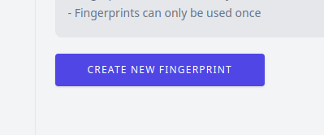
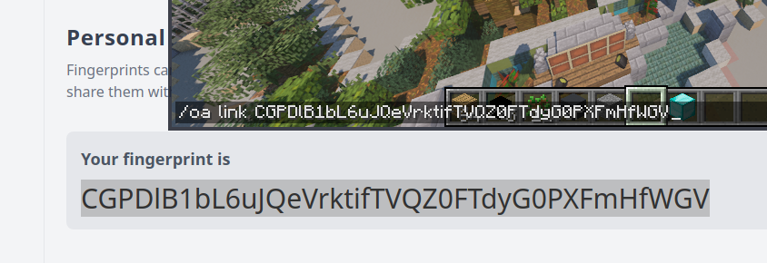

This couldn’t be simpler, just navigate to
the registration page
, create your account and verify your email.
Your account is empty by default since you don’t have any servers yet. Head over to the
fingerprint page
to create your first fingerprint. Fingerprints are one-time codes which can be used to verify your identity.


(you can alternatively follow the guide on the servers page)
Your server should now appear on the
servers page
, and that’s it! good job :)